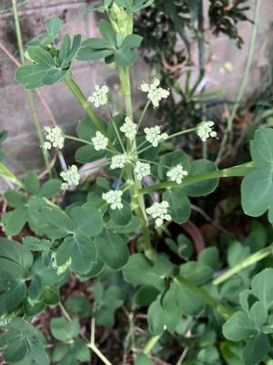

うるがいの話 ある日
最新: マイナンバーカードの交付【うるがいの話 ある日】とは 一日だけのプログです
『うるがいの話』の最新一日だけのプログで、通信料が少なく経済的だ。カニの画像をクリックすると全ての日付が載る『うるがいの話』サイトを表示します
|
|
【うるがいの話】 うるがい(ｳﾙｶﾞｲ urugai)とは、『もずくがに』の名前でとても大きくなります。 |
|---|---|
|
|
【カミマヤーの話】 猫のことを方言でマヤーといいます。カミマヤー（kamimayaa）とは、神の猫のことです。 |
|
【たながぁの音楽】 たながぁ（ﾀﾅｶﾞｰ tanagaa）とは手長えびのことで、何種類かあり大きいのは車 エビぐらいになります。 |

|
【ぶながぁの話】 ぶながぁ(ﾌﾞﾅｶﾞｰ bunagaa)とは、赤い髪の毛、赤い身体、そして身長は１ｍ２０ｃｍ ぐらい、川の蟹を食べているの目撃された。場所は沖縄県国頭郡大宜味村のと ある村僕の隣近所に住んでいる爺さんから、聞いた話です。 |
|
|
【ギーマの話】 ギーマ(giima)とは、山原の里山に咲くスズランに似た、 花を付けます。実は食べられます、 気が付くと口の周りが紫になっています。 |
2026年01月20日 (火）マイナンバーカードの交付
16:22
受け取りの予約１０時４５分、１０時半に駐車場に入り４０分に
窓口で９６番の整理券（カード）を渡される。待つこと、２０分
ほど、そして窓口で署名用電子証明書暗証番号（６桁から１６桁
）と、４桁の暗証番号をワザワザ控えとして記入させられた。
机の上の記入例では、署名用電子証明書暗証番号は４桁にＡＢを
加えて６桁にしてた。ホー、そう言うてもある、それをみた人は
それをまねて６桁にしたかもと思う。因みに私は、パソコンで採
番した８桁、だからこれまでのと同じにしました。変えたら、混
乱するから、４桁の暗証番号も同じ、誰が変えるか。暗証番号を
間違えてロックされたら、また役所へいかなければならない！。
あらかじめ、ハガキに記載していたので単純に書き写すだけなの
だが、隣の席ではそもそも準備していない！。まつこと数分、カ
ードを渡されるのかなと思ったら、カード受け取りの整理券９９
番を渡され、また、待合場で待つ。そして９９番と呼ばれてカー
テンで囲ったところに案内され座る、そして先ほどの番号をタブ
レット端末に打ち込む！！（止めてよね）、そしてヨボヨボのオ
ジーが写ったカードを貰う。駐車場を出たのが１１時２０分過ぎ
だった。なんなんでしょう、この手間暇のかけようは。
長命草の白い花、人参の花と似ている
